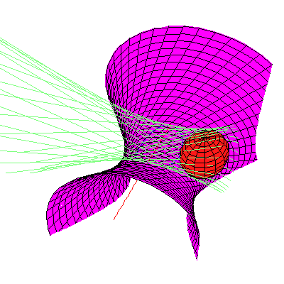
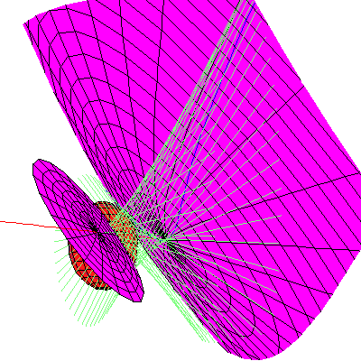

Back to the Four Symmetric Quadrics.
Back to the Four Symmetric Quadrics.
In the pictures below, the sphere in red is the original shere. The lines perpendicular to the x-axis and tangent to this sphere are drawn in light blue-green. Each quadric in Purple is a member of one of the families of quadrics tangent to the same set of lines perpendicular to the x-axis as the original sphere. Of the 12 families given by our Theorem, only 4 contain real quadrics. We display one real quadric from each family. Linked pictures are to animated .gif files showing how the quadric moves in the family.
Each family may perhaps best be thought of as parameterized by the points on a hyperbola with affine equation ab-1, with smooth quadrics corresponding to the points in the affine plane, but two singular members given by the two points at infinity. Our parameterization runs along one branch of this hyperbola, from a=sqrt(5)-2 to a=sqrt(5)+2, avoiding, but approaching the singular members.
These singular members are rank 2 quadrics with vertex either the x-axis
or the y-z plane at infinity (their zero set is two planes meeting
either in the x-axis or the y-z plane at infinity).
Either the two planes are real or they are complex conjugates.
In the first row, the two planes with vertex the y-z line at infinity
are complex conjugates, while in the second row, the two planes with vertex the
y-z line at infinity are both real.
Similarly, in the first column, the two planes with vertex the x-axis
are complex conjugates, while in the second row, the two planes with vertex the
x-axis are both real.
WARNING. These movies are huge, from 374 Kb to 757 Kb.
 |
 |
|
|  |  |
Back to the Four Symmetric Quadrics.
{kind=link}
{kind=link}